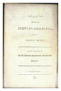
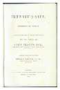

Gallery
From the Manuscript Tradition to the Printed Text: The Transmission of the Rasa’il of the Ikhwan al-Safa’ in the East and West
The Ikhwan al-Safa’ (Brethren of Purity) is a pseudonym assumed by a group of Muslim thinkers who, in the late ninth and early tenth centuries, produced an encyclopaedic corpus of 52 epistles (rasa’il) on a wide array of subjects ranging from cosmology to physical sciences, ethics to aesthetics, and revelation to metaphysics.
These Epistles are divided into four main books or sections: Of these 14 focus on the ‘mathematical sciences’ (numbers, geometry, astronomy, music, etc.); 17 deal with the ‘physical and natural sciences’ (physics, mineralogy, botany, etc.); 10 deal with the ‘psychological and intellectual sciences’ (cosmology, eschatology, etc.); and 11 are on the ‘theological and religious sciences’ (prophecy, metaphysics, magic, etc.). The work as a whole is therefore concerned with all the major aspects of human life — religious, social, economic, scientific and political.
Seeking to show the compatibility of the Islamic faith with other religions and intellectual traditions, the authors of the Rasa’il drew on a wide variety of sources. Traces of Babylonian, Judaeo-Christian, Persian, and Indian elements, as well as the influences of diverse schools of Hellenistic wisdom, permeate the Rasa’il. Common throughout the Rasa’il is the Ikhwan’s use of fables, parables and allegories for expounding their views. One such allegorical story is the lengthy debate between man and a variety of representatives of the animal kingdom, which occupies a large part of the twenty-second epistle and is a central feature of this encyclopaedic work.
 The Ikhwan al-Safa’ came to occupy a unique position in the history of Islamic thought and have engaged the attention of scholars in the East and West. An eloquent testimony to their popularity and influence is the existence of numerous manuscript copies of the text scattered throughout the world, both in private collections and institutional libraries, as well as the large numbers of printed texts, translations and studies of the Rasa’il which have appeared over the centuries.
The Ikhwan al-Safa’ came to occupy a unique position in the history of Islamic thought and have engaged the attention of scholars in the East and West. An eloquent testimony to their popularity and influence is the existence of numerous manuscript copies of the text scattered throughout the world, both in private collections and institutional libraries, as well as the large numbers of printed texts, translations and studies of the Rasa’il which have appeared over the centuries.
The earliest manuscript of the Rasa’il in the Institute’s collection probably originates from Syria and was copied in the mid-thirteenth century; other manuscripts in the collection were copied between the sixteenth and nineteenth centuries in Persia and India.
Of the numerous editions and translations of the Rasa’il, the epistle on the debate between humans and delegates from the animal kingdom has enjoyed the widest circulation. This epistle was first translated into Hebrew by the fourteenth-century author Kalonimos ben Kalonimos, and printed many times. It also formed the first printed edition of the Arabic text (editio princeps) of the Rasa’il, which was published in Calcutta in 1812. In the second half of the nineteenth century, this epistle was translated into Hindustani and French.
The complete Arabic text of the Rasa’il was first published in a four-volume edition between 1887-89. Other Arabic editions were published in the first half of the twentieth century: a Cairo edition in 1928 being the most notable.
 It was during the latter part of the nineteenth century that Western scholars first began to take a serious interest in the Ikhwan al-Safa’ and their Rasa’il. Among the leading contributors in the West to the study of the Rasa’il was the German scholar Fr. Dieterici who, for some thirty years, published texts and studies on Islamic philosophy with the Ikhwan al-Safa’ as the main subject of his attention. And it was Dieterici who translated the entire corpus of the Ikhwan al-Safa’ into German for the first time — this remains to the present day the only complete translation of the Rasa’il into any Western language.
It was during the latter part of the nineteenth century that Western scholars first began to take a serious interest in the Ikhwan al-Safa’ and their Rasa’il. Among the leading contributors in the West to the study of the Rasa’il was the German scholar Fr. Dieterici who, for some thirty years, published texts and studies on Islamic philosophy with the Ikhwan al-Safa’ as the main subject of his attention. And it was Dieterici who translated the entire corpus of the Ikhwan al-Safa’ into German for the first time — this remains to the present day the only complete translation of the Rasa’il into any Western language.
The Arabic edition and Hindustani translation published in Calcutta served as the basis for the first English translations. At least seven translations were published during the second half of the nineteenth century and, as may be expected, all were of the epistle on the debate between man and animals.
 During the course of this century, translations of selected epistles into Spanish, German, Italian and English as well as a substantial number of monograph studies and articles have been published.
During the course of this century, translations of selected epistles into Spanish, German, Italian and English as well as a substantial number of monograph studies and articles have been published.
Scholars such as Adel Awa, Alessandro Bausani, Abbas Hamdani, Yves Marquet, Seyyed Hossein Nasr, Ian Netton, Samuel Stern and many others have made important contributions to the study of the Ikhwan al-Safa’ and their Rasa’il.
 Gateways
Gateways